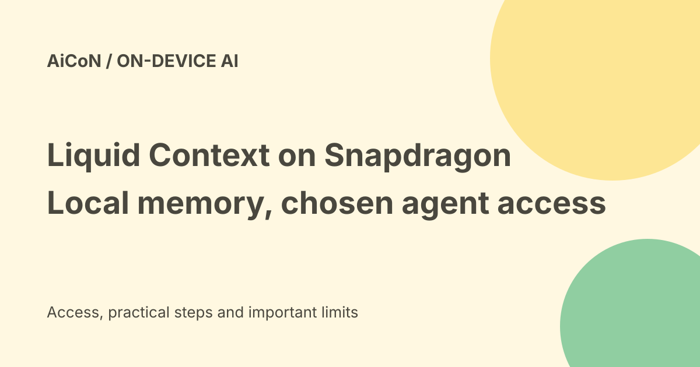

Liquid Context on Snapdragon: local memory, agent permissions and access
Liquid AI announced Liquid Context optimization for Qualcomm Snapdragon processors on 23 September 2026. It is a personal context layer for device makers, not a universal app download. Context is built locally, but connected agents can run locally, in the cloud or across both.

What is Liquid Context?
Liquid Context learns from permitted device signals and maintains an understanding of routines, preferences and needs. It provides relevant information to the agents the user chooses.
Context means background information that helps an agent understand a request. A preference for a quiet car cabin or a meeting that cannot move can matter without being repeated in every new chat.
What Snapdragon adds
The announcement says Liquid Context is optimized for Snapdragon processors, especially the Qualcomm Hexagon NPU. An NPU is a processor block designed for AI work.
Efficient local processing can keep context current without a cloud model processing every update. This describes the architecture and design goal. No battery-life or latency test was run for this guide.
Local memory does not mean no sharing
Liquid AI says personal context is built and maintained locally. Relevant context can then be made available to connected agents according to the user's permissions.
Those agents may run on the device, in the cloud or in a hybrid setup. Therefore the claim that your phone learns without sending anything to the cloud needs qualification. A cloud agent may receive permitted information even when the memory layer itself stays local.
Context and agent are different
The context layer supplies understanding. An agent uses that information to reason, suggest a next step or take a permitted action.
Liquid AI separately offers Liquid Agent for manufacturers, powered by its LFM2.5-2.6B model and optimized for the Hexagon NPU. Liquid Context can also support other chosen agents. You do not have to treat the memory layer and one particular agent as the same product.
The calendar example
The company illustrates a message saying a child is sick and needs an early pickup. Context helps a connected agent understand family priorities, inspect the calendar and draft rescheduling emails for review.
This is an illustrative workflow, not proof that it is enabled on your phone. Access to a calendar does not automatically grant permission to send an email or change someone else's invitation.
Other examples are illustrative
The announcement describes drafting a conference recap using permitted photos and writing preferences. It also describes a watch carrying information about a run into a car with permission.
These explain the intended cross-device experience. They do not establish compatibility with every watch, car, photo app or account.
Can I download it?
The announcement is directed at original equipment manufacturers, or OEMs. These are companies that build devices and choose the software installed in them.
No general consumer download, supported-phone list or India rollout date was established in the official announcement checked on 7 October. Buying any Snapdragon phone does not by itself guarantee Liquid Context support.
Free-versus-paid verdict
No consumer free plan or retail subscription price is listed in the announcement. Manufacturers can work with Liquid AI to evaluate the context layer and embedded agent.
Do not call it a free phone app based on the announcement. A finished device offer may include separate hardware, service or model-use costs. Check that offer when a manufacturer publishes one.
What Indian users should check
Look for a named supported device, an Indian regional software release and the manufacturer's own setup page. Check language support, cloud-service access, data handling and how to disable the feature.
Do not install an unrelated APK claiming to unlock the official context layer. This guide did not establish an installer or operate a connected phone.
Permissions need practical controls
A meaningful setup should explain which signals are read, which memories are stored and which agents receive information. Permission to read a photo is different from permission to publish it.
Check whether you can inspect and delete saved context, stop background access, revoke an agent and remove shared copies. These are evaluation questions, not confirmed controls on an announced consumer product.
A careful first-use path
- Confirm that the manufacturer actually supports the feature.
- Read its regional privacy and data-retention terms.
- Enable only the signals needed for one low-risk use.
- Inspect what the context layer remembers.
- Check whether the chosen agent sends data to a cloud service.
- Keep review before messages, purchases or shared posts.
- Test removal and permission revocation.
Do not use emergency examples as a reason to let untested software make critical decisions.
What changed since the original post?
We clarify that local context can feed permitted cloud or hybrid agents, and that availability depends on the device maker. A design for persistent local understanding is not a promise that all processing and sharing remain on the phone.
Frequently asked questions
Does every Snapdragon device include it?
That was not established.
Can a third-party agent use it?
The announcement describes support for chosen agents, subject to compatibility and permissions.
Is a free India app available?
No such offer was verified in the announcement.
Sources: Official Liquid AI and Qualcomm announcement · Business Wire release syndicated by Yahoo · The Next Web reporting. Checked 7 October 2026.